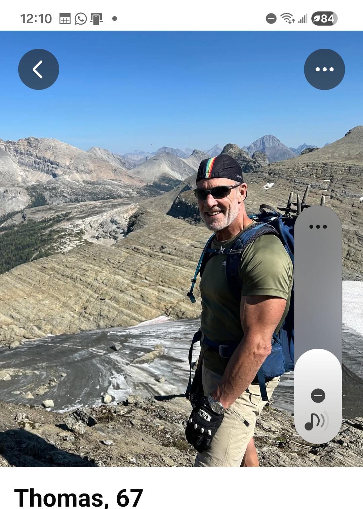
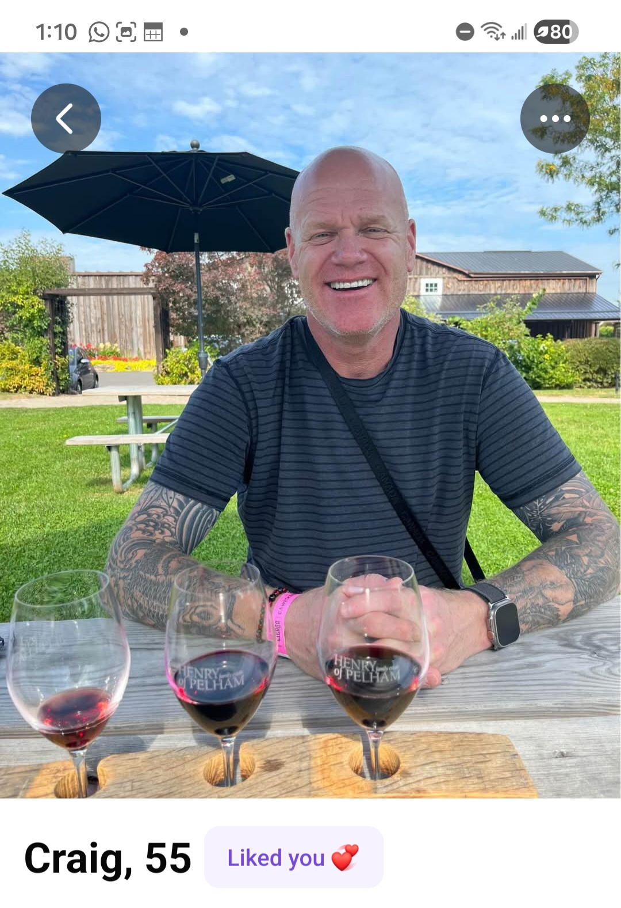
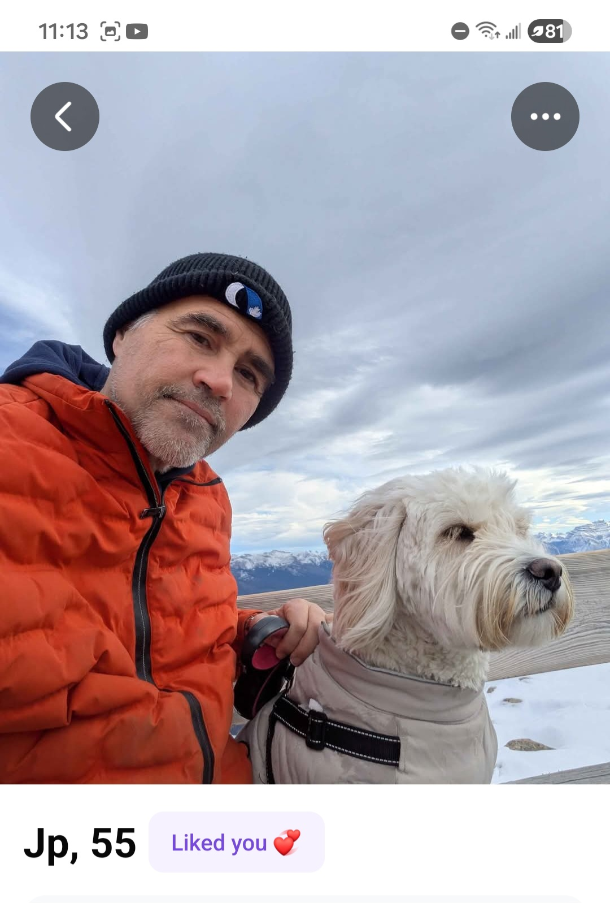
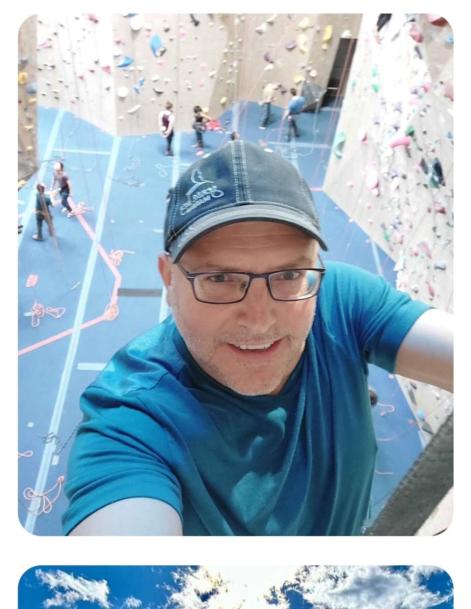
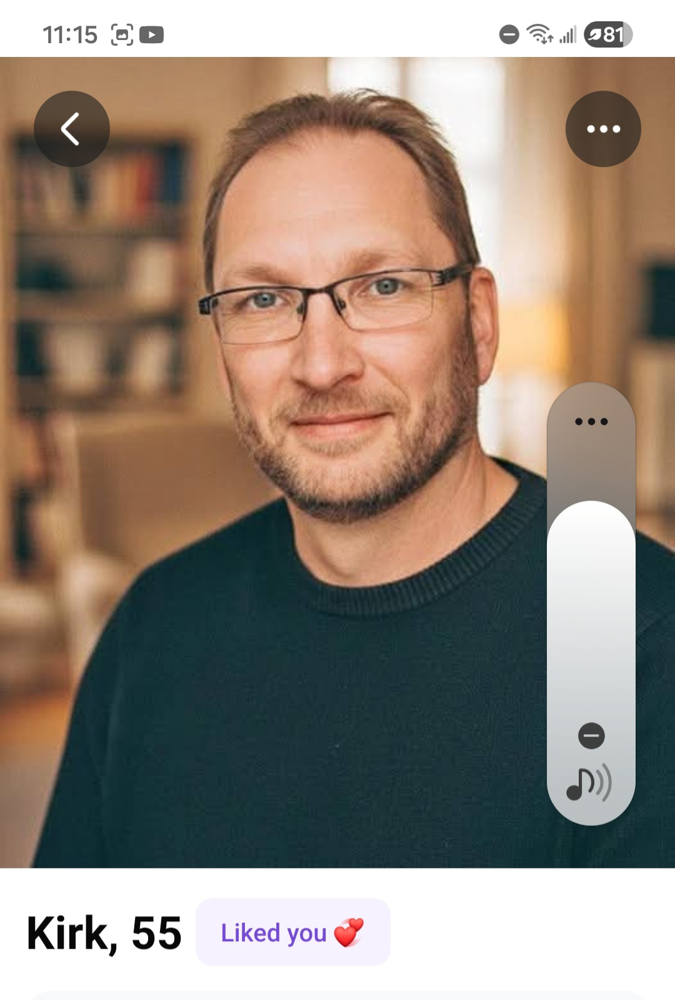

Private · For my eyes only · Updated as conversations unfold

Tara Brach was a huge part of his rebuild after his relationship ended — shares her teachings with others to this day. His profile says "the joy is in getting real with Tara Brach." Started mindfulness through counseling during a dark period. Believes in following instincts over overthinking. Interested in the Three Principles after you shared them. Hadn't heard of Alan Watts but immediately looked him up. His depth isn't performative — it comes from lived pain and real work on himself.
His very first message asked what book was on my bedside table — not what most men lead with. The depth of conversation immediately. His connection to nature as a spiritual reset. His vulnerability about his father and his past. The way he talks about what he wants in a relationship — peace, transparency, no fear of being judged. He quoted Brené Brown naturally in conversation.
🟢 Extraordinary emotional depth and vulnerability — has done real inner work
🟢 Shares your love of Tara Brach, mindfulness, nature as healing
🟢 Articulate about what he wants — peace, transparency, real intimacy
🟢 Said he feels safe with you — and then proved it
🟢 Phone call was "incredible" — real connection beyond text
🟡 Lives in Calgary — distance is a factor. Planning to meet in Red Deer (halfway)
🟡 Age gap (67 vs 56) — though he says he's far from typical
This one feels different. The depth of conversation from the very start has been extraordinary. He shared things about his father, his darkest times, and his rebuild with a level of honesty I haven't seen from the others. The phone call confirmed the connection. Planning to meet in Red Deer. The distance is the big question mark.
Had another conversation today and I really like him a lot. We connect on a very deep level. He makes me feel at home. He shows his vulnerability without it feeling forced. He is definitely number one right now. The only thing holding this back is that he lives in Calgary.
"He makes me feel at home. That is not something I say lightly."

Left arm (jungle theme): Lion with three cubs for himself and his 3 sons. A sloth for his mom. An elephant from Thailand.
Right arm (Japanese themed): A koi fish for strength and perseverance.
Not a deep reader or spiritual seeker in the traditional sense. Reads John Grisham, not Alan Watts. But he has done real emotional work since his divorce. Talks about "check-ins" as essential to a relationship. Says he's done the work and can process things. Values vulnerability, honesty, and emotional intimacy. Welcomes your deeper reading and conversations. His depth comes from lived experience and self-awareness rather than books.
Big smiles in every photo. Full sleeve of tattoos (each one meaningful, especially the lion with three cubs for his sons). The way he talks about his kids. He rehomed his dog because it wasn't fair to her. His dad is on his mind all the time. He's warm, affectionate, and not afraid to show it.
🟢 Devoted, present father. Every tattoo tells a story about the people he loves
🟢 Has done real emotional work since his divorce. Talks about it with maturity
🟢 Affectionate and not afraid to show it. Sweet morning messages
🟢 Values check-ins, communication, and emotional intimacy
🟢 Offered to plan your first date. Thoughtful about it
🟢 Close by (Fort Saskatchewan)
🟢 Has hot tub and sauna. Enjoys hot yoga. Lifestyle overlap
🟢 Works 7 on/7 off up north. Built-in personal space, which is exactly what you want
🟡 Not a deep reader or intellectual. Might not match you there. But he's open to it
🟡 Repeated the Minnesota/NZ story, suggesting he's talking to multiple people and losing track (normal at this stage)
Craig is sweet, warm, and consistent. He's not the deepest intellectual but he's emotionally available and has done real work on himself. The way he talks about his sons and his dad says a lot about his character. He's close by, he's planning a thoughtful first date for next Saturday, and he's not playing games. The 7 on/7 off schedule is actually a green flag. Built-in personal time and then quality time together when he's home. He's a cute one with the tattoos.
"Warm, devoted, and real. Not the deepest thinker but the biggest heart so far"

Jeff has done genuine inner work. He openly describes his transformation from a short-fused, controlling person to someone who pauses before reacting. He uses specific techniques: reliving memories and reimagining how he could have responded differently. He says the first years were hard work. He still catches himself getting triggered (like the pool hall debate) and uses those moments as teaching moments for himself. This is not someone performing growth. This is someone living it.
His opening message about being a "harmonious spirit of love and gratitude, still a work in progress." Then the flour story sealed it. A man who saw his children tense up and decided in that moment to change? That is extraordinary self awareness and courage. He also said "I want a strong connection" and "I enjoy hearing my own voice" with enough humor to show he doesn't take himself too seriously.
🟢 Has done real, sustained inner work over a decade, not just reading about it
🟢 Self aware enough to recognize his triggers in real time and use them as learning moments
🟢 Completely unplugs from work on days off (healthy boundaries)
🟢 Good relationship with his kids, video chats with son weekly, celebrated daughter's birthday
🟢 Funny without trying too hard. "Adult the hell out of your day"
🟢 Planned a thoughtful first date (dinner + surprise comedy show) rather than just coffee
🟢 Honest and transparent about his work schedule from the start
🟢 Fly in/fly out schedule means built in alone time for you (green flag per your preference)
🟡 "The guy side of me wants to say I would have enjoyed time in the hot tub with you" was a little forward early on, but he caught himself
🟡 What does "analyst" actually mean? Need to find out more about his work specifically
Friday, March 28, 2026
Dinner at 5:00 PM near Oliver area, then Don't Tell Comedy show (doors open 6:30, show at 7:00). Location announced at 8:00 AM day of. He planned the whole thing. Meeting at 4:30.
I really quite like this one. The flour story says everything you need to know about who he is becoming. He is doing the work, not just talking about it. Our conversations have a lot of depth and he makes me laugh. He planned a really thoughtful first date. The fly in/fly out schedule is actually perfect because I like my own time. Really looking forward to Friday.
"He saw his children flinch and chose to become a different man. That tells me everything."

Says he's spiritual. Interested in your Integrity Seminars work — looked it up and was impressed. Curious about ayahuasca, shamanism, and journeying. Has done drumming in a small group. Admits: "I'm afraid of what I'm capable of accomplishing." Hasn't confronted his inner work head-on but seems genuinely ready to explore. Said "I think we both have some deep sides — I just haven't confronted mine head on like you. Maybe I'm long overdue."
Photos of him doing a headstand on a paddle board, on a paddle board, in the mountains, and climbing. Active, adventurous, outdoorsy — a lot of shared interests. BC coast connection. His openness and warmth right from the start.
🟢 Warm, open communicator — vulnerable and curious
🟢 Many shared interests — outdoors, BC, paddle boarding, climbing, spirituality
🟢 Caring — organized a dance for a friend in long-term care
🟢 Hardworking and resourceful — 38 years in his trade, multiple side hustles
🟡 Busy shutdown work schedule — first date attempt fell through due to last-minute travel
Strong connection through conversation. Lots of shared interests and values. He's open to depth even though he hasn't done the inner work yet. Planned to meet but it fell through due to his work travel.
Things have been slipping off a little with Dave. The conversation has cooled down. Still like him but not feeling the same momentum as before. Other connections are pulling my attention more right now.
"Good guy, lots in common, but the energy has been fading"

Claims spirituality has helped him "excel forward in life" and says he believes in universal power. But when asked what book is on his nightstand, he assumed you'd say the Holy Bible, a self improvement book, or a romance novel. Doesn't read books at all. The spiritual talk feels more like a buzzword than a lived practice.
His opening message mentioned meaningful conversations and spiritual well-being. Initially seemed like he might be on the same wavelength.
🟢 Says he prefers in-person conversation over texting (could be genuine)
🟢 Consistent in reaching out
🔴 Doesn't actually listen to your questions. Misread the nightstand question and answered what he thought YOU would say
🔴 Assumptions about you feel reductive: Holy Bible, romance novels, yoga instruction books
🔴 Subtly condescending about your schedule and your depth ("are you a real serious person")
🔴 Spirituality seems surface level. Doesn't read. No curiosity about going deeper
🟡 "Are you home now?" "Are you home yet?" pattern feels a bit monitoring
Not my favourite. Something feels off. He says the right words about spirituality but doesn't back it up. The assumptions he makes about me (Bible, romance novels, yoga books) suggest he's not really seeing me. The comment about my schedule felt condescending. Considering dropping him. Seeing this laid out might help me decide.
"He's saying the right words but I don't think he's hearing mine"